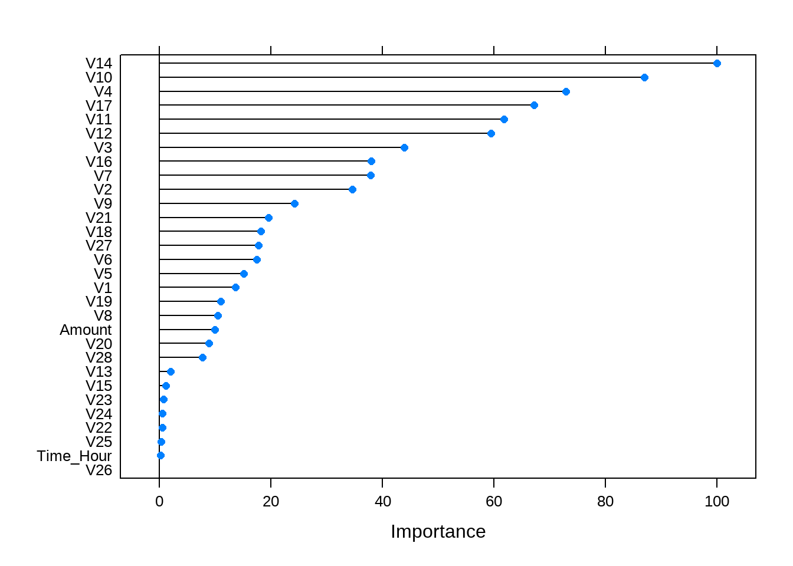
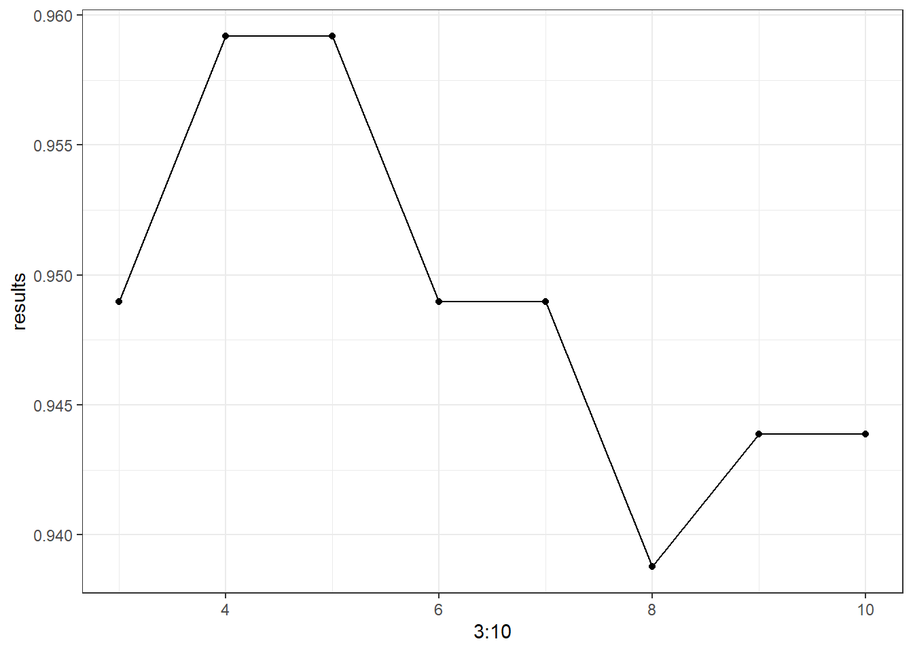

第 4 章 信用卡欺诈识别
4.2 数据预处理
card <- read_csv("data/creditcard.csv")
card <- as.data.frame(card)
str(card) # 查看数据基本结构和数据类型## 'data.frame': 284807 obs. of 31 variables:
## $ Time : num 0 0 1 1 2 2 4 7 7 9 ...
## $ V1 : num -1.36 1.192 -1.358 -0.966 -1.158 ...
## $ V2 : num -0.0728 0.2662 -1.3402 -0.1852 0.8777 ...
## $ V3 : num 2.536 0.166 1.773 1.793 1.549 ...
## $ V4 : num 1.378 0.448 0.38 -0.863 0.403 ...
## $ V5 : num -0.3383 0.06 -0.5032 -0.0103 -0.4072 ...
## $ V6 : num 0.4624 -0.0824 1.8005 1.2472 0.0959 ...
## $ V7 : num 0.2396 -0.0788 0.7915 0.2376 0.5929 ...
## $ V8 : num 0.0987 0.0851 0.2477 0.3774 -0.2705 ...
## $ V9 : num 0.364 -0.255 -1.515 -1.387 0.818 ...
## $ V10 : num 0.0908 -0.167 0.2076 -0.055 0.7531 ...
## $ V11 : num -0.552 1.613 0.625 -0.226 -0.823 ...
## $ V12 : num -0.6178 1.0652 0.0661 0.1782 0.5382 ...
## $ V13 : num -0.991 0.489 0.717 0.508 1.346 ...
## $ V14 : num -0.311 -0.144 -0.166 -0.288 -1.12 ...
## $ V15 : num 1.468 0.636 2.346 -0.631 0.175 ...
## $ V16 : num -0.47 0.464 -2.89 -1.06 -0.451 ...
## $ V17 : num 0.208 -0.115 1.11 -0.684 -0.237 ...
## $ V18 : num 0.0258 -0.1834 -0.1214 1.9658 -0.0382 ...
## $ V19 : num 0.404 -0.146 -2.262 -1.233 0.803 ...
## $ V20 : num 0.2514 -0.0691 0.525 -0.208 0.4085 ...
## $ V21 : num -0.01831 -0.22578 0.248 -0.1083 -0.00943 ...
## $ V22 : num 0.27784 -0.63867 0.77168 0.00527 0.79828 ...
## $ V23 : num -0.11 0.101 0.909 -0.19 -0.137 ...
## $ V24 : num 0.0669 -0.3398 -0.6893 -1.1756 0.1413 ...
## $ V25 : num 0.129 0.167 -0.328 0.647 -0.206 ...
## $ V26 : num -0.189 0.126 -0.139 -0.222 0.502 ...
## $ V27 : num 0.13356 -0.00898 -0.05535 0.06272 0.21942 ...
## $ V28 : num -0.0211 0.0147 -0.0598 0.0615 0.2152 ...
## $ Amount: num 149.62 2.69 378.66 123.5 69.99 ...
## $ Class : num 0 0 0 0 0 0 0 0 0 0 ...summary(card) # 查看数据的主要描述性统计量## Time V1 V2
## Min. : 0 Min. :-56.40751 Min. :-72.71573
## 1st Qu.: 54202 1st Qu.: -0.92037 1st Qu.: -0.59855
## Median : 84692 Median : 0.01811 Median : 0.06549
## Mean : 94814 Mean : 0.00000 Mean : 0.00000
## 3rd Qu.:139321 3rd Qu.: 1.31564 3rd Qu.: 0.80372
## Max. :172792 Max. : 2.45493 Max. : 22.05773
## V3 V4 V5
## Min. :-48.3256 Min. :-5.68317 Min. :-113.74331
## 1st Qu.: -0.8904 1st Qu.:-0.84864 1st Qu.: -0.69160
## Median : 0.1799 Median :-0.01985 Median : -0.05434
## Mean : 0.0000 Mean : 0.00000 Mean : 0.00000
## 3rd Qu.: 1.0272 3rd Qu.: 0.74334 3rd Qu.: 0.61193
## Max. : 9.3826 Max. :16.87534 Max. : 34.80167
## V6 V7 V8
## Min. :-26.1605 Min. :-43.5572 Min. :-73.21672
## 1st Qu.: -0.7683 1st Qu.: -0.5541 1st Qu.: -0.20863
## Median : -0.2742 Median : 0.0401 Median : 0.02236
## Mean : 0.0000 Mean : 0.0000 Mean : 0.00000
## 3rd Qu.: 0.3986 3rd Qu.: 0.5704 3rd Qu.: 0.32735
## Max. : 73.3016 Max. :120.5895 Max. : 20.00721
## V9 V10 V11
## Min. :-13.43407 Min. :-24.58826 Min. :-4.79747
## 1st Qu.: -0.64310 1st Qu.: -0.53543 1st Qu.:-0.76249
## Median : -0.05143 Median : -0.09292 Median :-0.03276
## Mean : 0.00000 Mean : 0.00000 Mean : 0.00000
## 3rd Qu.: 0.59714 3rd Qu.: 0.45392 3rd Qu.: 0.73959
## Max. : 15.59500 Max. : 23.74514 Max. :12.01891
## V12 V13 V14
## Min. :-18.6837 Min. :-5.79188 Min. :-19.2143
## 1st Qu.: -0.4056 1st Qu.:-0.64854 1st Qu.: -0.4256
## Median : 0.1400 Median :-0.01357 Median : 0.0506
## Mean : 0.0000 Mean : 0.00000 Mean : 0.0000
## 3rd Qu.: 0.6182 3rd Qu.: 0.66251 3rd Qu.: 0.4931
## Max. : 7.8484 Max. : 7.12688 Max. : 10.5268
## V15 V16 V17
## Min. :-4.49894 Min. :-14.12985 Min. :-25.16280
## 1st Qu.:-0.58288 1st Qu.: -0.46804 1st Qu.: -0.48375
## Median : 0.04807 Median : 0.06641 Median : -0.06568
## Mean : 0.00000 Mean : 0.00000 Mean : 0.00000
## 3rd Qu.: 0.64882 3rd Qu.: 0.52330 3rd Qu.: 0.39968
## Max. : 8.87774 Max. : 17.31511 Max. : 9.25353
## V18 V19 V20
## Min. :-9.498746 Min. :-7.213527 Min. :-54.49772
## 1st Qu.:-0.498850 1st Qu.:-0.456299 1st Qu.: -0.21172
## Median :-0.003636 Median : 0.003735 Median : -0.06248
## Mean : 0.000000 Mean : 0.000000 Mean : 0.00000
## 3rd Qu.: 0.500807 3rd Qu.: 0.458949 3rd Qu.: 0.13304
## Max. : 5.041069 Max. : 5.591971 Max. : 39.42090
## V21 V22 V23
## Min. :-34.83038 Min. :-10.933144 Min. :-44.80774
## 1st Qu.: -0.22839 1st Qu.: -0.542350 1st Qu.: -0.16185
## Median : -0.02945 Median : 0.006782 Median : -0.01119
## Mean : 0.00000 Mean : 0.000000 Mean : 0.00000
## 3rd Qu.: 0.18638 3rd Qu.: 0.528554 3rd Qu.: 0.14764
## Max. : 27.20284 Max. : 10.503090 Max. : 22.52841
## V24 V25 V26
## Min. :-2.83663 Min. :-10.29540 Min. :-2.60455
## 1st Qu.:-0.35459 1st Qu.: -0.31715 1st Qu.:-0.32698
## Median : 0.04098 Median : 0.01659 Median :-0.05214
## Mean : 0.00000 Mean : 0.00000 Mean : 0.00000
## 3rd Qu.: 0.43953 3rd Qu.: 0.35072 3rd Qu.: 0.24095
## Max. : 4.58455 Max. : 7.51959 Max. : 3.51735
## V27 V28 Amount
## Min. :-22.565679 Min. :-15.43008 Min. : 0.00
## 1st Qu.: -0.070840 1st Qu.: -0.05296 1st Qu.: 5.60
## Median : 0.001342 Median : 0.01124 Median : 22.00
## Mean : 0.000000 Mean : 0.00000 Mean : 88.35
## 3rd Qu.: 0.091045 3rd Qu.: 0.07828 3rd Qu.: 77.17
## Max. : 31.612198 Max. : 33.84781 Max. :25691.16
## Class
## Min. :0.000000
## 1st Qu.:0.000000
## Median :0.000000
## Mean :0.001728
## 3rd Qu.:0.000000
## Max. :1.000000round(prop.table(table(card$Class)),4)# 查看数据类别比例##
## 0 1
## 0.9983 0.00174.2.1 分层抽样
处理类别不平衡的数据需要了解的几个概念点：
类别不平衡：指分类任务重不同类别的训练样本树木差别很大的情况。
欠抽样：指某类（样本数占比很大）的样本中抽取出与另一类样本（样本数占比很小）个数一样的样本。即从大类别中抽取与小类别数目一样的样本。
过抽样：指针对样本数占比很小的类别，重新塑造一些数据，使其与另一类数据接近。
对数据进行一些基本转化。
# 把Time列转换为小时
card <- card %>%
mutate(Time_Hour = round(card[, 1]/3600, 0))
# 把Class列转化为因子型
card$Class <- factor(card$Class)
card_1 <- card[card$Class == "1", ] # 欺诈样本
card_0 <- card[card$Class == "0", ] # 非欺诈样本随机抽取与诈骗样本个数相同的非欺诈样本数据，并与元欺诈样本合并为新的数据。此处使用的欠抽样的方法。
set.seed(1234)
index <- sample(x = 1:nrow(card_0), size = nrow(card_1))
card_0_new <- card_0[index, ]
card_end <- rbind(card_0_new, card_1)
# 剔除Time列，用Time_Hour列代替。everything()选择所有的变量
card_end <- card_end[-1] %>%
select(Time_Hour, everything())按照类别进行分层抽样，建立训练集和测试集。
set.seed(1234)
# 按照新数据的目标变量进行8：2
index2 <- createDataPartition(card_end$Class,
p = 0.8, list = F)
train_data <- card_end[index2, ] # 创建训练集
test_data <- card_end[-index2, ] # 创建测试集
# 验证抽样结果，统计三个数据集中正反样本比例是否一致
table(card_end$Class)##
## 0 1
## 492 492table(train_data$Clas)##
## 0 1
## 394 394table(test_data$Class)##
## 0 1
## 98 984.3 描述性分析
4.3.1 不同时间诈骗次数-条形图
ggplot(card_1, aes(x = factor(Time_Hour),
fill = factor(Time_Hour)))+
geom_bar(stat = "count") +
theme_classic() +
labs(x = "Time_Hour", y = "Count") +
theme(legend.position = "none",
axis.text.x = element_text(angle = 90,
vjust = 0.5))
图 4.1: 不同时间诈骗次数
由图4.1可知：
第一天（024h）的诈骗总次数大于第二天（2548h）。
诈骗发生次数最多的三个时间段分别是：
- 第二天凌晨2点左右。
- 第一天上午11点左右。
- 第一天凌晨2点左右。
4.3.2 不同时间诈骗金额-箱线图
ggplot(card_1, aes(x = factor(Time_Hour),
y = Amount,
fill = factor(Time_Hour))) +
geom_boxplot() +
geom_hline(aes(yintercept =250, color = "red")) +
annotate("text", x = 6, y = 500, label = "Amount = 250", color = "red") +
geom_curve(x = 3, y = 450, xend = 5, yend = 250, angle = 25, color = "red",
arrow = arrow(length = unit(0.25, "cm"))) +
theme_classic() +
labs(x = "Time_Hour", y = "Amount") +
theme(legend.position = "none",
axis.text.x = element_text(angle = 90,
vjust = 0.5))
图 4.2: 不同时间诈骗金额
由图4.2可知：
诈骗金额最多的一次发生在第二天下午1点作用（34h），诈骗金额达到2000欧元左右。
诈骗金额普遍在250欧元之内。
4.3.3 不同时间平均诈骗金额-条形图
# 提取所需数据
card_1_mean <- card_1 %>%
group_by(Time_Hour) %>%
summarise(MeanAmount = mean(Amount))
ggplot(card_1_mean, aes(x = factor(Time_Hour), y = MeanAmount, fill = factor(Time_Hour))) +
geom_bar(stat = "identity") +
geom_hline(aes(yintercept = 200, color = "red")) +
annotate("text", x = 26, y = 240, label = "Mean_Amount = 200", color = "red") +
geom_curve(x = 23, y = 220, xend = 24, yend = 200,
curvature = 0.3, arrow = arrow(length = unit(0.2, "cm")), color = "red") +
theme_classic() +
theme(legend.position = "none",
axis.text.x = element_text(angle = 90, vjust = 0.5)) +
labs(x = "Time_Hour", y = "Mean_Amount")
图 4.3: 不同时间平均诈骗金额-条形图
如图4.3所示：
- 平均诈骗金额最多的时间段为第二天下午1点，此时间点包含诈骗金额最多的观测。
- 总体而言，平均诈骗金额普遍在200欧元以内。
4.4 自动参数调整调参-使用caret包
参数调整是提升模型性能的一个重要过程，而大多数机器学习算法都可以至少调整一个参数。复杂的模型通常可以通过调节多个参数值来调整模型从而达到更好的拟合效果。
e.g.，寻找最合适的k值来调整k近邻模型、调节隐藏层层数和隐藏层的节点数来优化神经网络模型；又如支持向量机模型中的调节核函数以及“软边界”惩罚大小等优化。
值得注意的是，如果对所有可能的调参选项均进行尝试，其复杂度非常大，耗时且不科学，需要一种更系统、科学的方式对模型的参数进行调节。
下表列举了使用caret包进行自动参数调整的模型及其参数：
| 模型 | 方法名 | 参数 |
|---|---|---|
| k近邻 | knn | k |
| 朴素贝叶斯 | nb | fL、usekernel |
| 决策树 | C5.0 | model、trials、winnow |
| OneR规则学习器 | OneR | 无 |
| 线性回归 | lm | 无 |
| 回归树 | rpart | cp |
| 模型树 | M5 | pruned、smoothed、rules |
| 支持向量机（径向基核） | svmRadial | C, sigma |
| 随机森林 | rf | mtry |
本案例我们使用knn和随机森林两个模型。
我们用iris数据对自动调参的步骤进行演示。
- 创建简单的调整的模型
set.seed(1234)
m_C50 <- train(Species~., data = iris, method = "C5.0")
m_C50## C5.0
##
## 150 samples
## 4 predictor
## 3 classes: 'setosa', 'versicolor', 'virginica'
##
## No pre-processing
## Resampling: Bootstrapped (25 reps)
## Summary of sample sizes: 150, 150, 150, 150, 150, 150, ...
## Resampling results across tuning parameters:
##
## model winnow trials Accuracy Kappa
## rules FALSE 1 0.9353579 0.9019696
## rules FALSE 10 0.9370844 0.9045424
## rules FALSE 20 0.9325835 0.8976068
## rules TRUE 1 0.9382311 0.9062975
## rules TRUE 10 0.9407392 0.9099910
## rules TRUE 20 0.9385430 0.9066136
## tree FALSE 1 0.9347127 0.9009924
## tree FALSE 10 0.9369888 0.9044013
## tree FALSE 20 0.9332286 0.8985820
## tree TRUE 1 0.9375860 0.9053246
## tree TRUE 10 0.9399845 0.9088007
## tree TRUE 20 0.9392443 0.9076915
##
## Accuracy was used to select the optimal model using the
## largest value.
## The final values used for the model were trials = 10, model =
## rules and winnow = TRUE.由上面的结果可以看出，基于model、trials和winnow三个参数，建立并测试了12个决策树（C5.0）模型，每个模型均给出了精度及Kappa统计量，最下方同时展示了最佳候选模型所对应的参数值。其中Kappa统计量用来衡量模型的稳定性：
- 很差的一致性： <0.2
- 尚可的一致性： 0.2~0.4
- 中等的一致性： 0.4~0.6
- 不错的一致性： 0.6~0.8
- 很好的一致性： 0.8~1
- 定制调参
使用trainCotrol()函数创建一些列配置选项，这些选项考虑了包括重抽样策略以及用于选择最佳模型的度量这些模型评价标准的管理。主要专注于两个重要的参数：method和selectionFuncio。
method为冲抽样的方法。
selectionFunction参数可以设定一个函数，用于在各个候选者中选取特定的模型，共3个函数：
- best函数：默认选项，简单的选择具有最好的某特定度量值的候选者。
- oneSE函数：选择最好性能标准差之内的最简单的候选者。
- Tolerance函数：选择某个用户制定比例之内最简单的候选者。
set.seed(1234)
model_rf <- train(Class~., data = train_data, method = "rf",
trControl = trainControl(method = "cv",
number = 5,
selectionFunction = "oneSE"))
model_rf## Random Forest
##
## 788 samples
## 30 predictor
## 2 classes: '0', '1'
##
## No pre-processing
## Resampling: Cross-Validated (5 fold)
## Summary of sample sizes: 631, 631, 630, 630, 630
## Resampling results across tuning parameters:
##
## mtry Accuracy Kappa
## 2 0.9276465 0.8552977
## 16 0.9314521 0.8628921
## 30 0.9276627 0.8553120
##
## Accuracy was used to select the optimal model using the one
## SE rule.
## The final value used for the model was mtry = 2.# 进行预测
pred_rf <- predict(model_rf, test_data[-31]) # 建立混淆矩阵
confusionMatrix(data = pred_rf, reference = test_data$Class,
positive = "1")## Confusion Matrix and Statistics
##
## Reference
## Prediction 0 1
## 0 98 7
## 1 0 91
##
## Accuracy : 0.9643
## 95% CI : (0.9278, 0.9855)
## No Information Rate : 0.5
## P-Value [Acc > NIR] : < 2e-16
##
## Kappa : 0.9286
##
## Mcnemar's Test P-Value : 0.02334
##
## Sensitivity : 0.9286
## Specificity : 1.0000
## Pos Pred Value : 1.0000
## Neg Pred Value : 0.9333
## Prevalence : 0.5000
## Detection Rate : 0.4643
## Detection Prevalence : 0.4643
## Balanced Accuracy : 0.9643
##
## 'Positive' Class : 1
## plot(varImp(model_rf)) # 查看变量的重要性
4.5 kNN建模
4.5.1 原理
knn，即邻近分类器，就是把未标记的案例归类为与他们最相似的带有标记的案例所在的类。
算法流程：
依次计算测试样本与哥哥训练样本间的距离（常用欧式距离）；
将这些距离按照升序排列；
选取距离最小的k（3~10）个训练样本点；
确定这k个点中不同类别的占比；
返回这k个点中占比最大的类别作为测试样本的预测分类。
4.5.2 模型建立
# 创建空向量
results <- c()
for (i in 3:10){
set.seed(1234)
pred_knn <- knn(train_data2[-31], test_data2[-31],
train_data2$Class, i)
Table <- table(pred_knn, test_data2$Class) # 得到混淆矩阵
accuracy <- sum(diag(Table))/sum(Table) # diag()提取对角线的值
results <- c(results, accuracy)
}
ggplot(as.data.frame(results), aes(x = 3:10, y = results)) +
geom_point()+
geom_line() +
theme_bw() +
labs(xlab = " ")
set.seed(1234)
pred_knn <- knn(train = train_data2[-31], test = test_data2[-31],
cl = train_data2$Class, k = 4)
confusionMatrix(pred_knn,test_data2$Class, positive = "1")## Confusion Matrix and Statistics
##
## Reference
## Prediction 0 1
## 0 97 7
## 1 1 91
##
## Accuracy : 0.9592
## 95% CI : (0.9212, 0.9822)
## No Information Rate : 0.5
## P-Value [Acc > NIR] : <2e-16
##
## Kappa : 0.9184
##
## Mcnemar's Test P-Value : 0.0771
##
## Sensitivity : 0.9286
## Specificity : 0.9898
## Pos Pred Value : 0.9891
## Neg Pred Value : 0.9327
## Prevalence : 0.5000
## Detection Rate : 0.4643
## Detection Prevalence : 0.4694
## Balanced Accuracy : 0.9592
##
## 'Positive' Class : 1
##